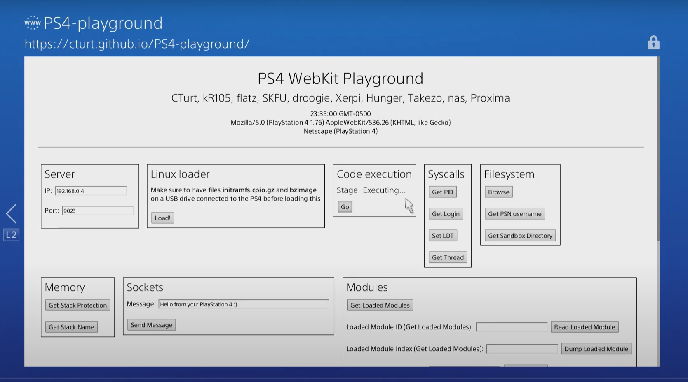

Webkit Exploit
Playstation 4, derste anlatıldığı gibi bir çok açık kaynaklı araç ve yazılım kullanır. Bunlardan biri de Webkit'tir.
Webkit iOS, Wii U, 3DS, PS Vita ve PS4 sistemlerindeki tarayıcılarda websayfalarını renderlayan açık kaynaklı bir yerleşik motordur. Doğal olarak Webkit'in de açıkları paylaşılır.
2013 Eylülünde Apple Safari Tarayıcısında bir güvenlik açığı tespit edildi(Heap Buffer Overflow). Apple Safari tarayıcı da Webkit kullandığından daha sonra nas ve Proxima isimli iki hacker bu exploit'in Playstation 4 Portunu yayınladı. PoC(Proof of Concept) kodunu da herkesle paylaşarak Playstation 4 konsolunu hackleme işlemini başlattı.
Bu olay, hackerların Webkit'in okuyup yazabildiği her şeye keyfi olarak erişebilmesini sağladı. Bu sayede modüller dump edilebildi, stackteki(yığın bellek) adresleri değiştirilebildi(overwrite) ve döndürülebildi(return) ayrıca pointer register'ın(rip) talimatları kontrol edilebilir hale geldi. Bu olanaklar ROP(Return Oriented Programming) kullanmaya olanak tanıdı.
Resimde bir Webkit Exploit'in Playground'ının(Oyun Alanının) yapabildiklerini görüyorsunuz. Bu exploit ile Linux kurabilir, Syscall komutu sayesinde kernel ile iletişim kurabilir, Filesystem'e erişebilir, yüklü bir modülü dumplayabilir veya daha fazlasını yapabilirsiniz.